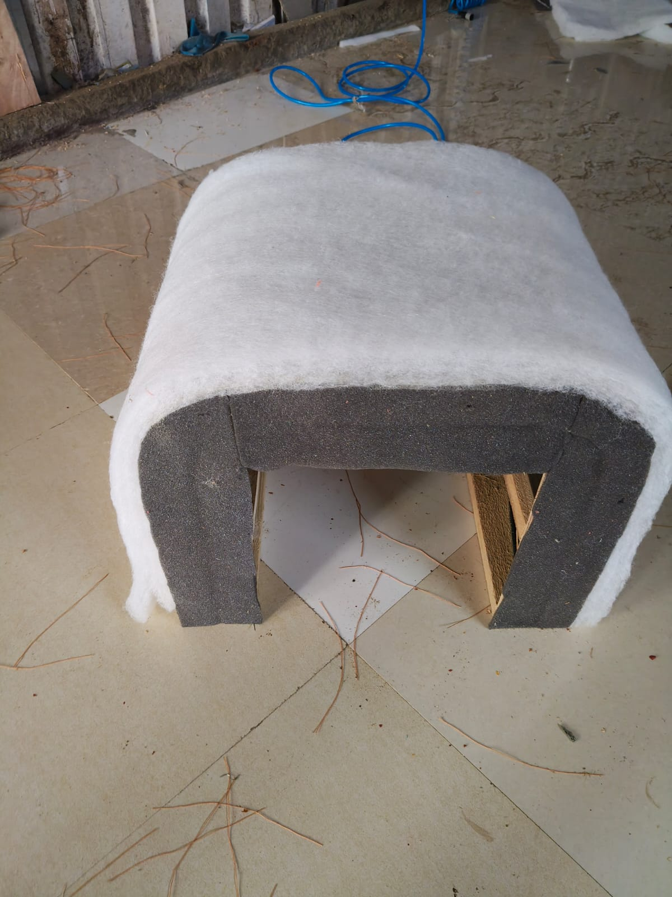
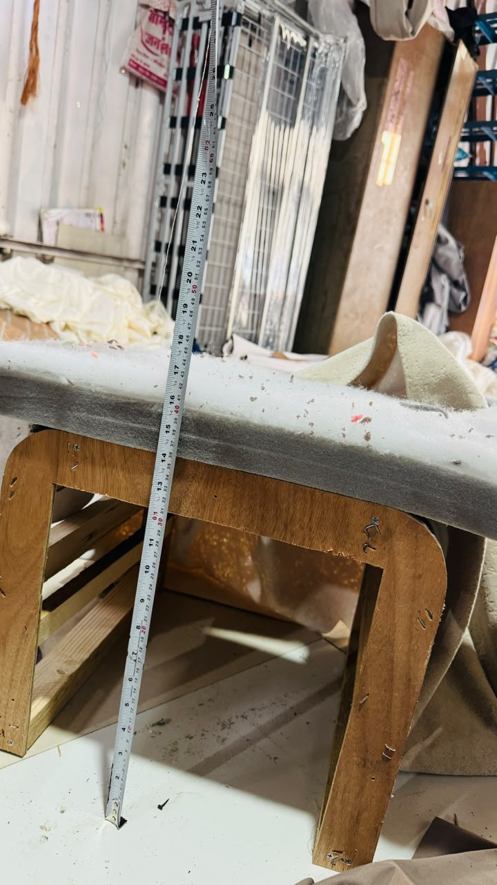
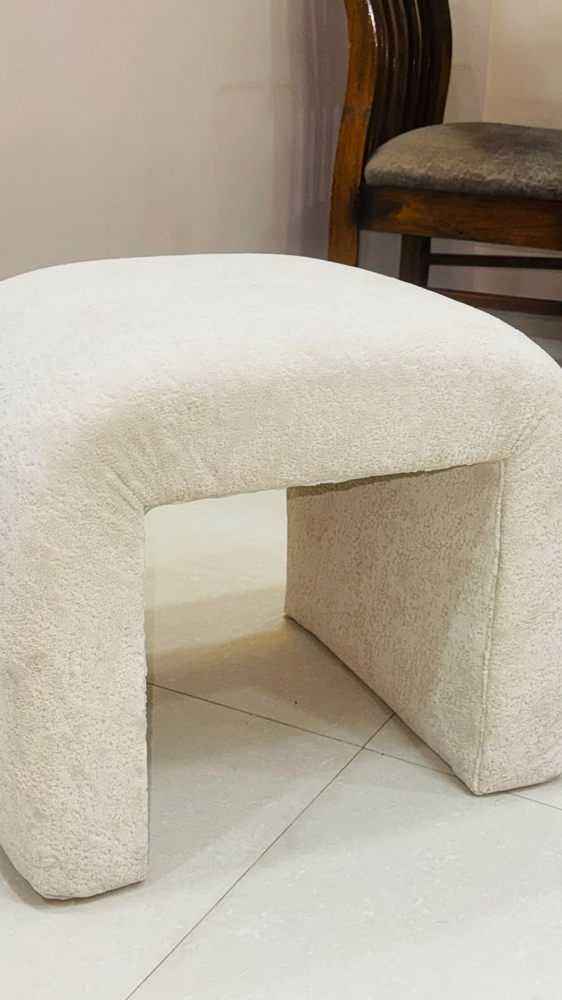
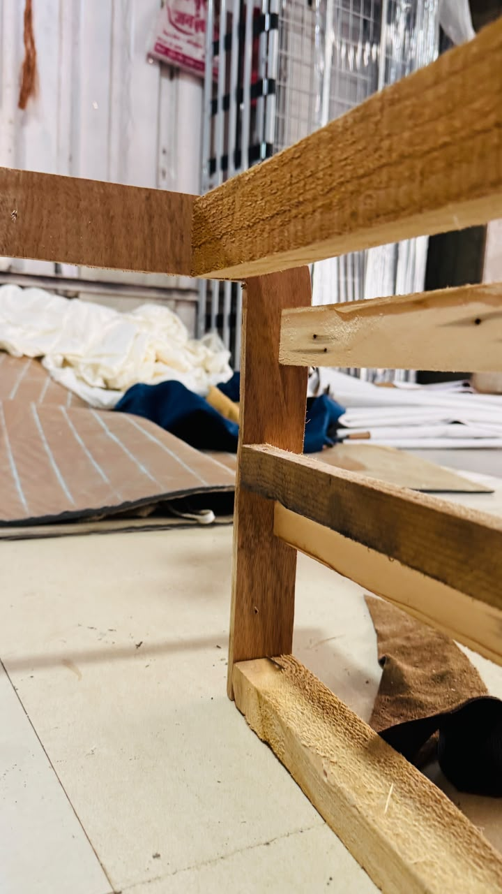

01Material Selection
INTERIOR DESIGN PROJECT
A design that blends comfort, craft and
contemporary interiors.

Every detail matters. Here’s a look at how POUFFÉE came to life — from raw materials to a refined piece of functional art.
▶ Watch Full Process01Material Selection

02Measuring & Shaping

03Building Form

04Layering Softness

05Upholstery Finish
BEHIND THE SCENES
A closer look at the care and attention that go into making POUFFÉE.
“Design is not just
what it looks like,
but how it’s made.”—

The selected upholstery is bouclé fabric: tactile, softly textured and integral to POUFFÉE’s warm, sculptural character.


THE FULL STUDY
POUFFÉE / SPACES FEEL BETTER